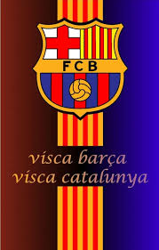

Barcalona
Barcelona is een supermooie stad in Spanje,
aan de kust van de Middellandse Zee en heeft van alles te bieden: van mooie stranden tot indrukwekkende gebouwen.
Eén van de bekendste dingen in Barcelona is de Sagrada Família, een gigantische kerk die al meer dan 100 jaar gebouwd wordt. Less hierover verder meer!
Naast de bijzondere gebouwen kun je er ook lekker eten. In de oude stad vind je smalle straatjes, oude kerken en gezellige pleintjes.
Ook als je van voetbal houdt is Barcelona een gave stad om te bezoeken, want het is de thuisstad van FC Barcelona en het Camp Nou stadion.
Barcelona is dus een stad waar je je niet snel verveelt. Er is altijd wel iets te zien, te doen of te beleven!

Klik hier voor pagina 2!
Koop hier de nieuwste kleding